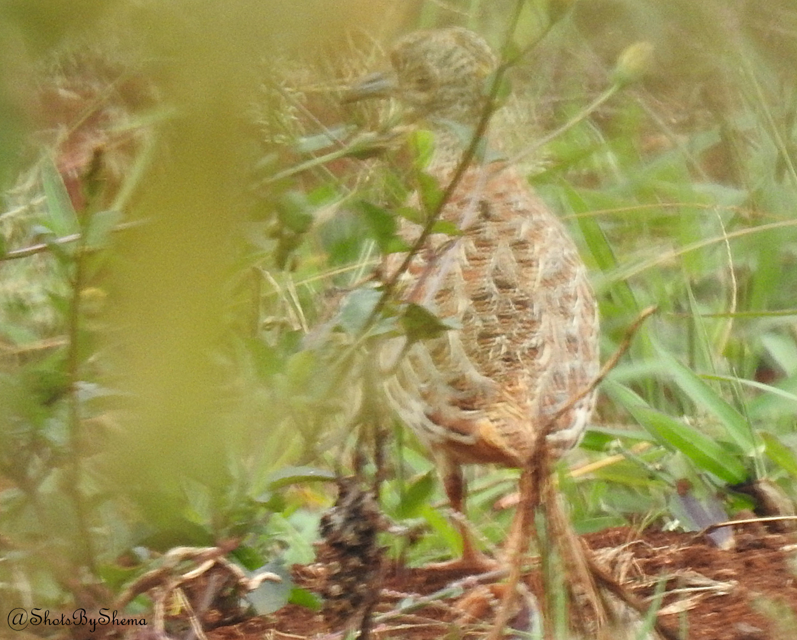
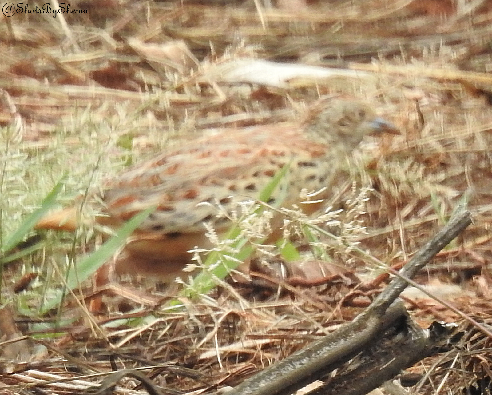

From: Sidney Shema <sidneyshema@gmail.com>
Date: 2019-10-09 15:43
Subject: Common Buttonquail, African Firefinch et al at UoN Upper Kabete
Dear birders,
Today's Nature Kenya Wednesday morning bird walk visited the University of Nairobi's Upper Kabete Field Station (pentad 0115_3640) once again, and once again the Field Station did not disappoint! The bird of the day was one that nobody expected: a Common Buttonquail!! It was a lifer for majority of the group. It was also the first record of this species on the Kenya Bird Map for Nairobi! The photos I got (attached) will not win any awards but the sighting was nothing short of memorable.
Small numbers of Chestnut Weavers are still in the area, slowly acquiring their breeding plumage and building mock nests. Flocks of non-breeding White-winged and Red-collared Widowbirds and Red-billed Quelea were scattered all over. Palearctic migrants seen were Eurasian Bee-eaters, Willow Warblers, Yellow Wagtails and Barn Swallows. Hinde's Babblers were heard but not seen. African Firefinch was also a great sighting.

